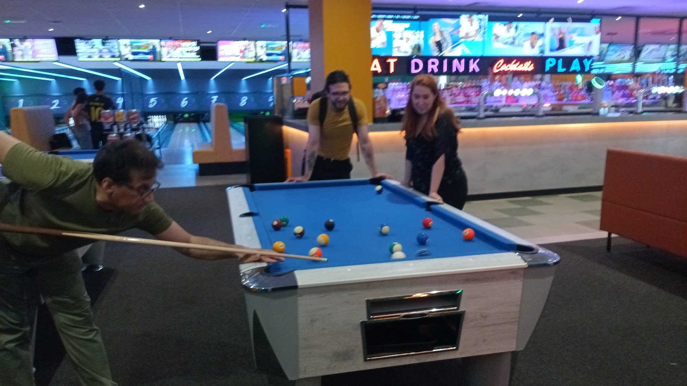
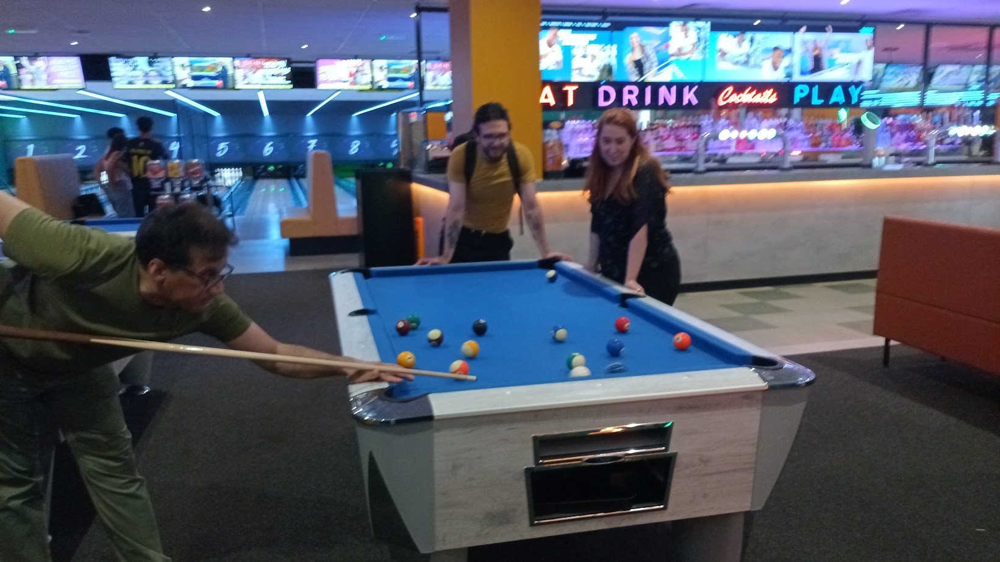
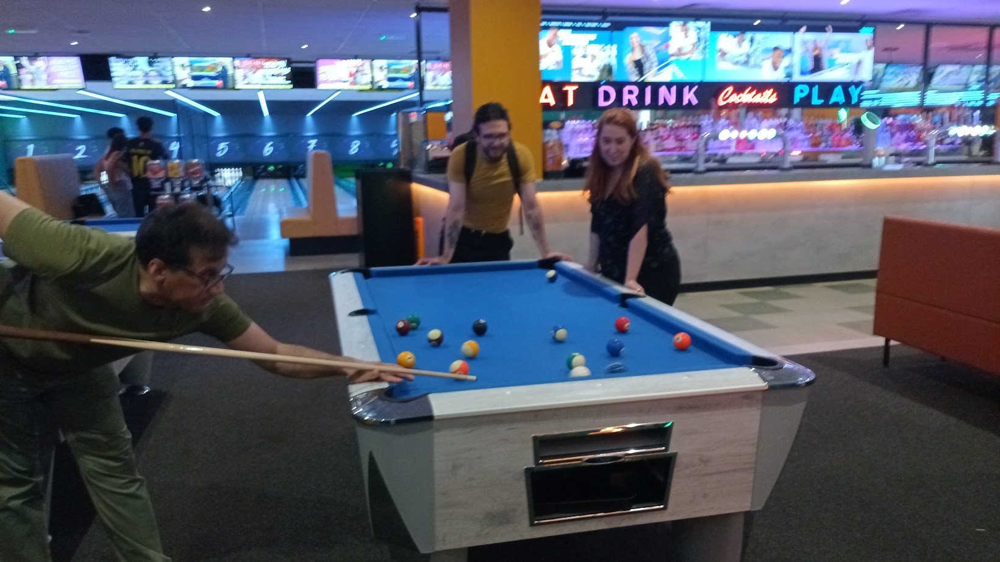

Lab retreat - July 18, 2025
We played bowling and pool! It was a very good fun!
 

Welcome to the Asally Lab at the University of Warwick.
We are interested in understanding how bacteria regulate and utilise the dynamics of transmembrane voltage, developing/testing new tools in bioelectricity, and using the gained understanding for tackling antibiotics resistance and other important microbiological problems.
We played bowling and pool! It was a very good fun!

Marina(PhD student) joined April 2025, and Sarb (postdoc) joined July 2025! Valentin is also spending a short (2-month) postdoc with us! The lab is getting busy!